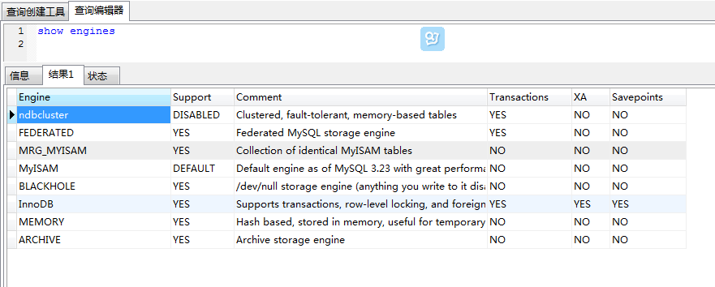

MySql Engine
###什么是存储引擎
Mysql使用不同的技术存储数据，这些不同的技术被称为存储引擎，查看自己的mysql服务器可用的引擎命令：show engines

其中，InnoDB和MyISAM为常用的两种存储引擎。
###设置存储引擎的方式如下：
1、mysql的配置文件中设置默认存储引擎，默认是MyISAM
2、启动mysql服务器时在命令行后边加上–default-storage -engine或–default-table-type
3、创建表时指定：在create table 后边加上engine=InnoDB
4、更改表的存储引擎：ALTER TABLE mytable ENGINE = MyISAM
###存储引擎的区别
MyISAM不支持事务，支持全文索引，只支持表锁、select相对快、缓存索引文件。
InnoDB支持事务，不支持全文索引，支持表锁、行锁（where是主键时有效）、insert、update、delete时相对快、缓存数据和索引。
1、InnoDB 中不保存表的具体行数，也就是说，执行select count() from table时，InnoDB要扫描一遍整个表来计算有多少行，但是MyISAM只要简单的读出保存好的行数即可。注意的是，当count()语句包含 where条件时，两种表的操作是一样的。
2、对于AUTO_INCREMENT类型的字段，InnoDB中必须包含只有该字段的索引，但是在MyISAM表中，可以和其他字段一起建立联合索引。
3、DELETE FROM table时，InnoDB不会重新建立表，而是一行一行的删除。
4、大批的inserts 语句在MyISAM下会快一些，但是updates 在InnoDB 下会更快一些——尤其在并发量大的时候。
参考
Comments